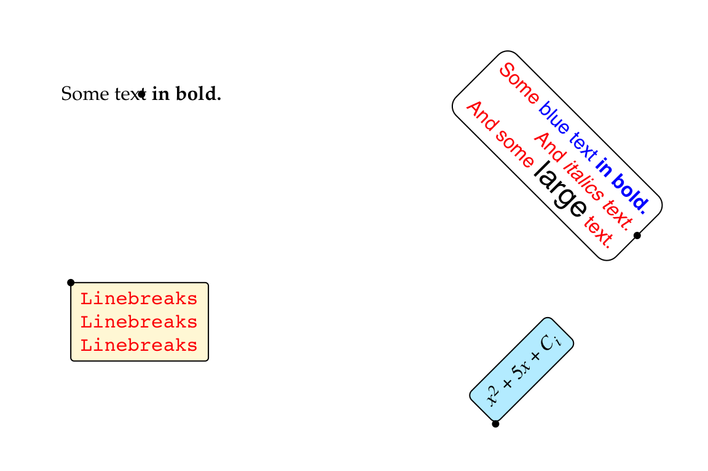
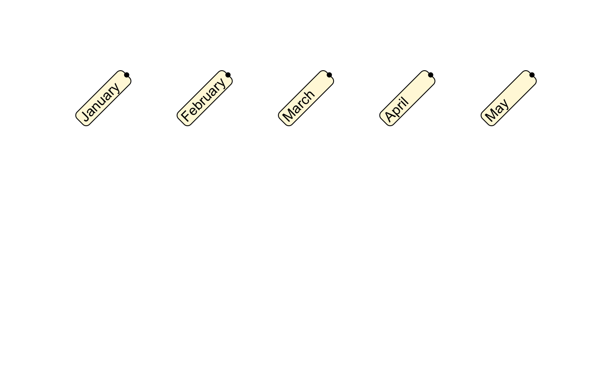
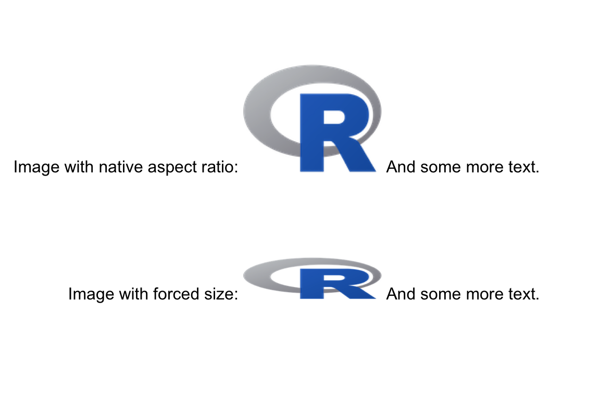
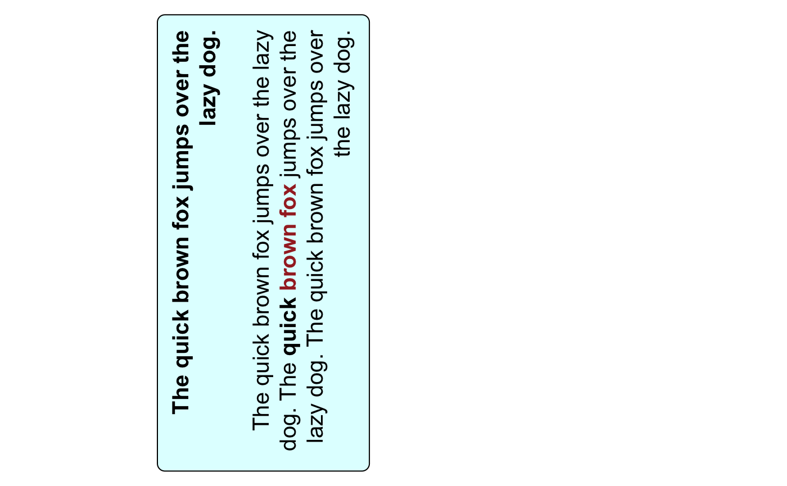

Improved text rendering support for grid graphics in R.
Installation
To install the latest development version of this package, please run the following line in your R console:
Once the package is available on CRAN, you will be able to install the latest release via install.packages() as usual:
Examples
The gridtext package provides two new grobs, richtext_grob() and textbox_grob(), which support drawing of formatted text labels and formatted text boxes, respectively. Both grobs understand an extremely limited subset of Markdown, HTML, and CSS directives. The idea is to provide a minimally useful subset of features. These currently include italics, bold, super- and subscript, as well as changing text color, font, and font size via inline CSS. Extremely limited support for images is also provided.
Note that all text rendering is performed through a custom-built rendering pipeline that is part of the gridtext package. This approach has several advantages, including minimal dependencies, good performance, and compatibility with all R graphics devices (to the extent that the graphics devices support the fonts you want to use). The downside of this approach is the severely limited feature set. Don’t expect this package to support the fancy CSS and javascript tricks you’re used to when designing web pages.
Richtext grob
The function richtext_grob() serves as a replacement for textGrob(). It is vectorized and can draw multiple text labels with one call. Labels can be drawn with padding, margins, and at arbitrary angles. Markdown and HTML parsing is turned on by default.
library(grid)
library(gridtext)
text <- c(
"Some text **in bold.**",
"Linebreaks<br>Linebreaks<br>Linebreaks",
"*x*<sup>2</sup> + 5*x* + *C*<sub>*i*</sub>",
"Some <span style='color:blue'>blue text **in bold.**</span><br>And *italics text.*<br>And some <span style='font-size:18pt; color:black'>large</span> text."
)
x <- c(.2, .1, .7, .9)
y <- c(.8, .4, .1, .5)
rot <- c(0, 0, 45, -45)
gp = gpar(
col = c("black", "red"),
fontfamily = c("Palatino", "Courier", "Times", "Helvetica")
)
box_gp = gpar(
col = "black", fill = c(NA, "cornsilk", "lightblue1", NA),
lty = c(0, 1, 1, 1)
)
hjust <- c(0.5, 0, 0, 1)
vjust <- c(0.5, 1, 0, 0.5)
grid.newpage()
g <- richtext_grob(
text, x, y, hjust = hjust, vjust = vjust, rot = rot,
padding = unit(c(6, 6, 4, 6), "pt"),
r = unit(c(0, 2, 4, 8), "pt"),
gp = gp, box_gp = box_gp
)
grid.draw(g)
grid.points(x, y, default.units = "npc", pch = 19, size = unit(5, "pt"))
The boxes around text labels can be set to have matching widths and/or heights, and alignment of text inside the box (specified via hjust and vjust) is separate from alignment of the box relative to a reference point (specified via box_hjust and box_vjust).
text <- c("January", "February", "March", "April", "May")
x <- (1:5)/6 + 1/24
y <- rep(0.8, 5)
g <- richtext_grob(
text, x, y, halign = 0, hjust = 1,
rot = 45,
padding = unit(c(3, 6, 1, 3), "pt"),
r = unit(4, "pt"),
align_widths = TRUE,
box_gp = gpar(col = "black", fill = "cornsilk")
)
grid.newpage()
grid.draw(g)
grid.points(x, y, default.units = "npc", pch = 19, size = unit(5, "pt"))
Basic support for images is available as well. As of now, images will always be vertically aligned with the baseline of the text.
grid.newpage()
img_src <- system.file("extdata", "Rlogo.png", package = "gridtext")
text <- glue::glue("Image with native aspect ratio: <img src='{img_src}' width='100'/> And some more text.")
grid.draw(richtext_grob(text, x = 0.9, y = 0.7, hjust = 1))
text <- glue::glue("Image with forced size: <img src='{img_src}' width='100' height='30'/> And some more text.")
grid.draw(richtext_grob(text, x = 0.9, y = 0.3, hjust = 1))
Textbox grob
The function textbox_grob() is intended to render multi-line text labels that require automatic word wrapping. It is similar to richtext_grob(), but there are a few important differences. First, while richtext_grob() is vectorized, textbox_grob() is not. It can draw only a single text box at a time. Second, textbox_grob() doesn’t support rendering the text box at arbitrary angles. Only four different orientations are supported, corresponding to a rotation by 0, 90, 180, and 270 degrees.
g <- textbox_grob(
"**The quick brown fox jumps over the lazy dog.**<br><br>
The quick brown fox jumps over the lazy dog.
The **quick <span style='color:brown;'>brown fox</span>** jumps over the lazy dog.
The quick brown fox jumps over the lazy dog.",
x = unit(0.5, "npc"), y = unit(0.7, "npc"),
gp = gpar(fontsize = 15),
box_gp = gpar(col = "black", fill = "lightcyan1"),
r = unit(5, "pt"),
padding = unit(c(10, 10, 10, 10), "pt"),
margin = unit(c(0, 10, 0, 10), "pt")
)
grid.newpage()
grid.draw(g)
The alignment parameters hjust, vjust, halign, and valign function just like they do in richtext_grob().
g <- textbox_grob(
"**The quick brown fox jumps over the lazy dog.**<br><br>
The quick brown fox jumps over the lazy dog.
The **quick <span style='color:brown;'>brown fox</span>** jumps over the lazy dog.
The quick brown fox jumps over the lazy dog.",
x = unit(0.2, "npc"), y = unit(0.5, "npc"),
hjust = 0.5, vjust = 1, halign = 1,
gp = gpar(fontsize = 15),
box_gp = gpar(col = "black", fill = "lightcyan1"),
r = unit(5, "pt"),
padding = unit(c(10, 10, 10, 10), "pt"),
margin = unit(c(0, 10, 0, 10), "pt"),
orientation = "left-rotated"
)
grid.newpage()
grid.draw(g)